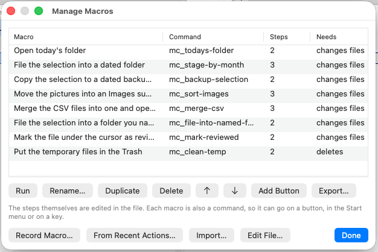

Macro
Una macro è una sequenza con un nome di azioni sui file — creare una cartella, spostarci la selezione, etichettare ciò che resta — che puoi rieseguire con un clic. Non è un linguaggio di script: non ci sono condizioni né cicli, ed è voluto. Una macro è un elenco che puoi leggere, e saperlo leggere è ciò che serve prima di approvarlo.
Tutto ciò che fa una macro passa per gli stessi meccanismi dell’assistente: una macro non può quindi fare nulla che non abbia il tuo permesso, ogni suo passo compare nel registro delle azioni, e un passo che si può annullare resta annullabile.
Una sola finestra: Configurazione ▸ Macro…
Tutto quello che riguarda le macro sta dietro quell’unica voce: l’elenco, i due modi di crearne una e l’accesso al file. Nel menu non c’è altro fra cui scegliere.
La via più rapida: registrarne una
Non deve scrivere una macro da zero, e non deve nemmeno capire dopo dove è cominciata.
- Configurazione ▸ Macro… ▸ Registra macro…. La finestra si sposta e compare un piccolo pannello che dice che una registrazione è in corso e conta i passi mentre avvengono.
- Faccia il lavoro una volta: copiare, spostare, rinominare, eliminare, creare cartelle e file. Lavori normalmente; il registratore non è d’intralcio.
- Ferma e salva….
- I passi tornano già spuntati. Tolga la spunta a ciò che serviva solo a preparare, dia un nome alla macro e lasci attivo Aggiungi anche un pulsante.
- Spuntate Seguire i pannelli invece di questi file precisi se la macro deve lavorare la prossima volta su ciò che sarà selezionato. Le righe cambiano mentre spuntate, così vedete cosa state per salvare.
Salva macro, e il pulsante è nella barra. È tutto il ciclo.
Scarta la registrazione butta via la registrazione e non salva nulla. Nulla viene registrato prima che prema Registra, e nulla dopo che ha fermato: è proprio a questo che servono i due estremi.
Una registrazione sopravvive a un riavvio. Se Peach Commander si chiude mentre ne è in corso una — perché esce lei o perché va in crash — torna con quella, lo dice, e lei continua oppure la scarta.
Se preferisce averlo su un tasto o un pulsante, il comando si chiama cm_MacroRecord: avvia una registrazione e ferma quella in corso.
L’altra via: da quello che è già successo
Dalle azioni recenti…, nella stessa finestra, costruisce una macro dalle ultime cose successe invece di registrarne di nuove — utile quando ha appena fatto il lavoro e solo allora pensa alla macro.
 Quello che è già successo, offerto come i passi di una nuova macro.
Quello che è già successo, offerto come i passi di una nuova macro.
L’elenco contiene entrambe le cose: quello che avete fatto nei pannelli (F5, F6, F7, F8 e una rinomina) e quello che ha fatto l’assistente o un’altra macro. Ogni riga dice quale delle due, perché dopo una sessione con entrambe gli stessi due file possono comparire in ciascuna. Qui le righe partono non spuntate: «tutto quello che ho fatto nell’ultima mezz’ora» è raramente la macro che si intende.
Questa via ha bisogno della cronologia. Quello che fa a mano viene riletto dalla cronologia globale; se l’ha disattivata (Impostazioni ▸ Varie ▸ Registra una cronologia globale), questo elenco non contiene nulla di suo — e lo dice. Registra macro… non ne dipende.
Cosa non viene offerto. Creare un archivio, e tutto il resto che l’applicazione registra solo per nome, non può diventare un passo: non c’è una forma da dargli. Quelle righe restano visibili in grigio con la loro ragione invece di sparire, così un elenco di cinque che ne offre tre non sembra averne mancati due. E se non chiedete altrimenti, i percorsi sono quelli davvero usati: una macro registrata ripete quella copia, non «una copia del genere». Apritela nell’editor e mettete
%So%Tdove volete che segua i pannelli.
Seguire i pannelli è il modo di chiedere altrimenti. I file venuti tutti da una cartella diventano la selezione; una cartella che è uno dei due pannelli diventa quel pannello, e una cartella al suo interno conserva la coda — un «sposta queste quattro fatture in Documenti/2026-08» registrato diventa «sposta ciò che è selezionato in 2026-08 dall’altra parte», e domani funziona in due cartelle diverse. Ciò che non sta sotto nessuno dei due pannelli resta il percorso che è, perché non c’è niente in cui ripiegarlo. L’opzione è offerta solo quando cambierebbe qualcosa.
Gli esempi in dotazione
La prima volta che aprite Modifica file…, il file viene creato con otto esempi completi. Sono macro normali — modificatele, oppure cancellate quelle che non volete — e ognuna porta un commento che dice cosa fa e cosa conviene cambiare:
| Macro | Cosa fa |
|---|---|
| Open today's folder | Crea la cartella di oggi nel pannello attivo e ci entra. Domani serve di nuovo. |
| File the selection into a dated folder | Seleziona tutti i PDF, crea una cartella anno-mese di fronte e ce li sposta. |
| Copy the selection to a dated backup folder | Copia ciò che avete selezionato voi in una cartella datata dall'altra parte. |
| Move the pictures into an Images subfolder | Una maschera, una sottocartella, nella cartella in cui siete già. |
| Merge the CSV files into one and open it | Mostra come un passo usa quello che un passo precedente ha prodotto. |
| File the selection into a folder you name | Vi chiede la cartella quando parte. |
| Mark the file under the cursor as reviewed | La etichetta e data il suo commento — un file, non la selezione. |
| Put the temporary files in the Trash | Una macro che cancella, e quella giusta per vedere una volta la richiesta di permessi. |
Ognuna diventa un comando, quindi potete metterne una qualsiasi su un pulsante o su un tasto senza scrivere nulla.
Gestirle
Configurazione ▸ Macro… è l’elenco: come si chiama ogni macro, il nome del suo comando, quanti passi ha e cosa chiederà il controllo dei permessi — così «questa cancella» si vede prima di metterla su un tasto. Da lì può eseguire, rinominare, duplicare, riordinare, eliminare, esportare e importare. Passando sopra una riga se ne vedono i passi.
Esegui è il modo di provare quella appena registrata, senza prima chiudere la finestra e andare a cercare il comando. Passa per lo stesso piano e la stessa conferma di ogni altra esecuzione: questa finestra non ha privilegi propri.
Esporta… scrive la macro selezionata in un file tutto suo, e Importa… aggiunge macro da file che qualcuno le ha mandato — è a questo che serve un file per macro. Un import non sostituisce mai: una macro il cui id è già occupato ne riceve uno libero (un backup che arriva accanto al suo diventa backup-2), e le viene detto con quali id sono finite le nuove, perché il pulsante che creerà deve nominare quella giusta.

Come si chiama ogni macro, come cosa gira e per cosa chiederà il permesso.Riordinare non è ornamento: l’ordine del file è l’ordine in cui le elencano l’Elenco comandi e il selettore della barra dei pulsanti.
Cancellando vi si propone di portare via anche i pulsanti, e vale la pena saperlo anche se non aprite mai questa finestra: una macro rimossa a mano lascia dietro di sé il suo pulsante e il suo tasto, e nessuno dei due fa più nulla — ora l’applicazione dice che la macro non c’è più invece di tacere, ma il pulsante resta affar vostro. Un tasto o una voce di menu va tolto dove è stato messo.
I passi non si modificano qui. Modifica file… passa la mano all’editor per quello, per la stessa ragione per cui non c’è un modulo: un passo è il nome di uno strumento con i suoi argomenti, ed è esattamente ciò che JSON è.
Modificare le macro a mano
Modifica file… apre il file della macro selezionata: macros/<id>.json nella sua cartella di configurazione, creato la prima volta con gli esempi qui sopra. Senza selezione viene mostrata nel pannello la cartella stessa, dove F3 ne legge una e F4 ne modifica una. Una macro è una lista di passi, e ogni passo nomina uno strumento e i suoi argomenti:
{
"id": "stage-by-month",
"title": "File the selection into a dated folder",
"icon": "calendar",
"steps": [
{ "tool": "set_selection", "arguments": { "mask": "*.pdf" } },
{ "tool": "make_directory", "arguments": { "path": "%T/%{date:yyyy-MM}" } },
{ "tool": "move", "arguments": { "sources": "%S", "destination": "%T/%{date:yyyy-MM}" } }
]
}
Il salvataggio ricarica subito le macro — e dice se qualcosa non va: un nome di strumento sbagliato, un argomento obbligatorio mancante, due macro con lo stesso id. Una macro con un errore non viene eseguita e non finisce su un pulsante; vi si dice quale è e cosa non va, mentre l'editor è ancora aperto.
Per vedere quali strumenti esistono e cosa accettano, usate Configurazione ▸ Elenco comandi…, oppure chiedete list_macros all'assistente.
Segnaposto
Le lettere singole sono le stesse che usano la barra dei pulsanti e il menu Start: se hai già fatto un pulsante, qui non c’è nulla di nuovo da imparare.
| Segnaposto | Significa |
|---|---|
%P |
La cartella del pannello attivo |
%T |
La cartella dell’altro pannello |
%N |
Il file sotto il cursore |
%S |
I file selezionati — un elenco, che è ciò che prendono copy, move e move_to_trash |
%{date:yyyy-MM} |
La data di avvio della macro, in quel formato |
%{1.destination} |
Un valore con nome dal risultato del passo 1 — qui il file che merge_files ha scritto |
%{1} |
L'intero risultato del passo 1, quando quel passo ha prodotto direttamente un percorso o un elenco di percorsi |
%{ask:Folder name} |
Vi chiede quando la macro parte. %{ask:Folder name=Archive} precompila il campo con Archive |
Le graffe servono per le aggiunte perché le lettere sono già occupate: %M significa «il nome sotto il cursore nell’altro pannello» in tutto il resto del programma, quindi un mese non poteva scriversi così.
Per i risultati di un passo usate la forma con nome. La maggior parte degli strumenti riporta più valori invece di uno solo — merge_files riporta dove ha scritto, quanti file ha unito e quante righe ne sono uscite —, perciò %{2.destination} è la scrittura abituale e un %{2} nudo funziona solo con uno strumento che restituisce un unico percorso. Un nome che non c'è, o che non è un percorso, ferma la macro invece di essere indovinato.
Un % in un nome di file è un %. Niente di ciò che un passo produce, e nessun nome preso da un pannello, viene riletto come segnaposto — un file chiamato 50%Netto.pdf attraversa quindi le macro senza cambiare. Per un % letterale in un modello che scrivete voi, raddoppiatelo: %%.
Chiedere un valore
%{ask:…} è il modo in cui una macro riceve ciò che non può sapere in anticipo: la macro più comune che ci sia è «sposta la selezione in una cartella che nomino io», e senza questo la cartella andrebbe fissata nel file.
Ve lo si chiede prima che compaia il piano, e le risposte sono già dentro: le righe dicono «Sposta la selezione in “Fatture”», non «in quello che state per scrivere». Annullare la domanda annulla la macro; non è stato proposto nulla, tanto meno eseguito.
La stessa domanda scritta due volte viene posta una volta sola e usata in entrambi i punti, così due passi che nominano la stessa cartella non possono divergere. Ciò che segue il primo = è quanto il campo contiene all’inizio. Le parole sono le vostre: appaiono esattamente come le avete scritte, nella lingua in cui le avete scritte.
Una risposta è un valore, mai un modello: digitare 50%Netto dà una cartella chiamata 50%Netto.
Una macro che chiede non può essere eseguita da un agente esterno via MCP — lì non c’è nessuno a cui chiedere, e prendere in silenzio i valori predefiniti significherebbe rispondere al posto vostro. Viene rifiutata, e lo dice.
%S è il solo punto in cui una macro si discosta da un pulsante: su un pulsante la selezione diventa un elenco di parole per una riga di comando, qui diventa l’elenco dei percorsi completi che prendono gli strumenti sui file.
Un passo il cui %S o %{1} risulta vuoto ferma la macro invece di eseguirsi senza nulla. Un move senza file non è un move più piccolo: è una richiesta che non dice più niente, e segnalarne il successo sarebbe una bugia.
Eseguire una macro
Ogni macro diventa un comando chiamato mc_<id>, e compare quindi da sola in:
- Configurazione ▸ Elenco comandi…
- Configurazione ▸ Modifica scorciatoie… — assegnala a un tasto
- Il selettore di comandi dell’editor della barra dei pulsanti
- Il tuo file di menu
.mnueusercmd.ini, se li usi - L’assistente, che può eseguirla per nome
Prima che una macro che modifica qualcosa venga eseguita, ti mostra i suoi passi come elenco e attende. Puoi escludere un passo che non vuoi; ciò che resta è ciò che viene eseguito. Una macro che solo legge parte senza chiedere. Cancellare un passo si porta via quelli che dipendono da esso — una macro è una sequenza, e il passo che riempie la cartella non può girare senza quello che la crea: quelle righe si spengono da sole e diventano grigie. Rimettete il passo e tornano — tranne quelle che avete cancellato voi, che restano cancellate.
 I passi, risolti sui vostri pannelli — ognuno è cancellabile.
I passi, risolti sui vostri pannelli — ognuno è cancellabile.
Tutto ciò che si può riconoscere come sbagliato prima della partenza — uno strumento che non esiste, un argomento mancante, un passo che eseguirebbe un'altra macro — la ferma prima del primo passo, non dopo il terzo. Se un passo fallisce mentre gira, la macro si ferma lì invece di proseguire: il passo due di solito presuppone che il passo uno sia avvenuto, e spostare file in una cartella non creata non è un successo parziale. Il rapporto nomina il passo, dice cosa è andato storto e quanti passi erano già stati eseguiti; ciascuno è nel registro delle azioni, con la sua via di ritorno dove esiste.
Cosa può fare una macro
Una macro è valutata sulla cosa più impegnativa che contiene. Una macro i cui passi solo leggono è trattata come una lettura; una che termina con un’eliminazione definitiva è protetta come un’eliminazione definitiva — prima che parta qualunque cosa, non quattro passi dopo.
Un passo che esegue un comando è giudicato da ciò che quel comando fa, non dal fatto che sia un comando — una macro che esegue cm_DeleteReal è quindi una macro che cancella, e vi viene mostrata come tale. Una macro non può eseguirne un'altra, in nessuna delle due scritture.
Non concedere nulla in più è il comportamento predefinito. Se una macro contiene un passo che i tuoi permessi non ammettono — un comando shell, uno script — l’intera macro viene rifiutata con la sua motivazione, e non accade nulla.
Annullare
Ogni passo è registrato separatamente, quindi annulla dopo una macro riprende il suo ultimo passo, non l’intera macro. Non esiste un annulla per l’intera macro, perché diversi strumenti non hanno alcun inverso e un pulsante che lo offrisse mentirebbe su quelli.
Dove viene salvato tutto
- Le sue macro stanno in
macros/nella cartella di configurazione, una per<id>.json— file semplici, che può confrontare, tenere con i suoi dotfile e mandare a qualcuno. Unmacros.jsondi una versione precedente viene ripreso al primo avvio e rinominatomacros.json.migrated; dopo non lo legge più nessuno. - I pulsanti aggiunti da una macro sono normali voci della barra dei pulsanti in
default.bar, quindi rimuoverne uno è come rimuovere qualsiasi pulsante.
Prossimi passi
- Automazione (AppleScript e Comandi rapidi) — Pilotare Peach Commander da uno script, ed eseguire i tuoi script come passo di una macro.
- La barra dei pulsanti — Dove finisce il pulsante aggiunto da una macro.
- Tastiera e scorciatoie — Assegnare una macro a un tasto.